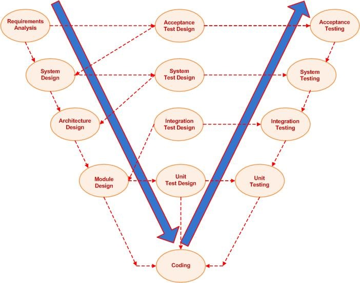

Pengertian Metodologi VShaped
Metodologi VShaped adalah sebuah model SDLC yang eksekusi per fasenya dilakukan secara sekuensial
dalam bentuk V. V-Model adalah sebuah perpanjangan dari model waterfall dan didesain berdasarkan hubungan antar
tahap pengujian antar fase. Ini berarti bahwa untuk setiap fase dalam satu siklus, ada tahap pengujian yang
terkait langsung. Seperti halnya model waterfall, model ini merupakan model yang menerapkan tingkat kedisiplinan
yang sangat tinggi di mana fase selanjutnya tidak dapat dimulai sebelum fase sebelumnya selesai.

Tahapan Metodologi VShaped
- Proses Verification terdiri dari 4 fase yaitu :
- Requirement Analysis adalah siklus di mana semua informasi kebutuhan pengembangan informasi digali dari customer.
Di dalam fase ini melibatkan proses komunikasi yang intensif dengan customer untuk memahami kebutuhan sistem dengan
tepat.
- System Design adalah merancang sistem dengan lengkap. Desain sistem yang lengkap akan memiliki perincian perangkat
keras dan pengaturan komunikasi yang lengkap untuk sistem yang sedang dikembangkan. Rencana system test dikembangkan berdasarkan desain sistem.
- Architectural Design adalah adalah dasar dalam memilih arsitektur dengan memahami semua yang terdiri dari daftar modul,
fungsionalitas singkat dari setiap modul, hubungan antarmuka mereka, dependensi, tabel database, diagram arsitektur, detail teknologi.
- Module Desain adalah fase desain modul sistem rusak menjadi modul kecil. Desain rinci modul ditentukan, yang dikenal sebagai desain tingkat rendah.
- Proses Coding dilakukan berdasarkan persyaratan, bahasa pemrograman yang sesuai diputuskan. Ada beberapa pedoman dan standar
untuk coding. Sebelum memeriksa repositori, membangun akhir dioptimalkan untuk kinerja yang lebih baik, dan kode pergi melalui banyak ulasan kode untuk memeriksa kinerja.
- Proses Validation terdiri dari 4 fase yaitu :
- Unit testing adalah pengujian pada tingkat kode dan membantu menghilangkan bug pada tahap awal, meskipun semua bug
tidak dapat diungkap oleh unit testing.
- Integration Testing dikaitkan dengan fase architectural design. Integration Testing dilakukan untuk menguji koeksistensi dan komunikasi modul secara
internal dalam sistem.
- System testing secara langsung terkait dengan fase system design. System testing memeriksa seluruh fungsionalitas sistem dan komunikasi sistem yang sedang dikembangkan
dengan sistem eksternal. Sebagian besar masalah kompatibilitas perangkat lunak dan perangkat keras dapat diungkap selama pelaksanaan system testing ini.
- Acceptance testing dikaitkan dengan fase requirement analysis dan melibatkan pengujian produk di lingkungan pengguna. Acceptance testing mengungkap masalah kompatibilitas
dengan sistem lain yang tersedia di lingkungan pengguna. Selain mengungkap masalah kompatibilitas dengan sistem lain, pada fase ini juga mampu mengungkap masalah non-fungsional seperti load dan performance kinerja sistem di
lingkungan pengguna yang sebenarnya.